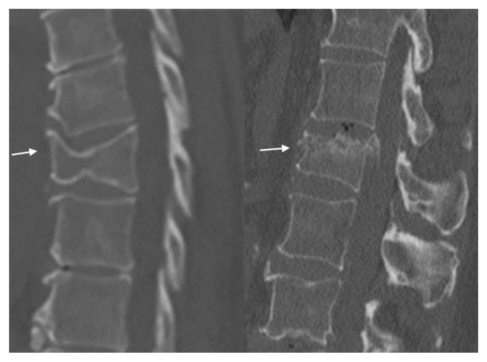
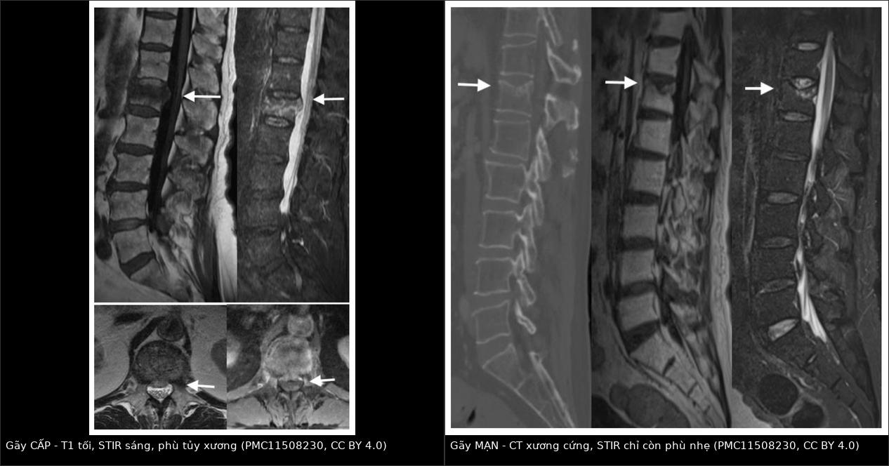
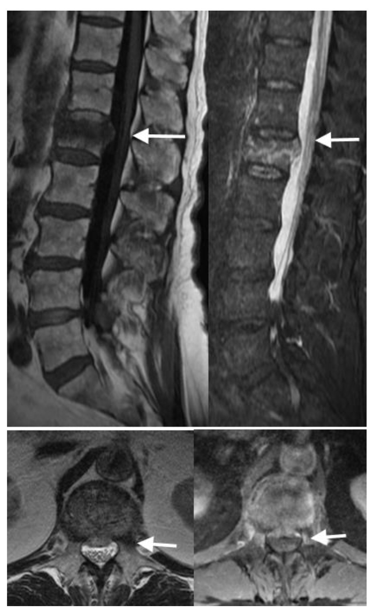
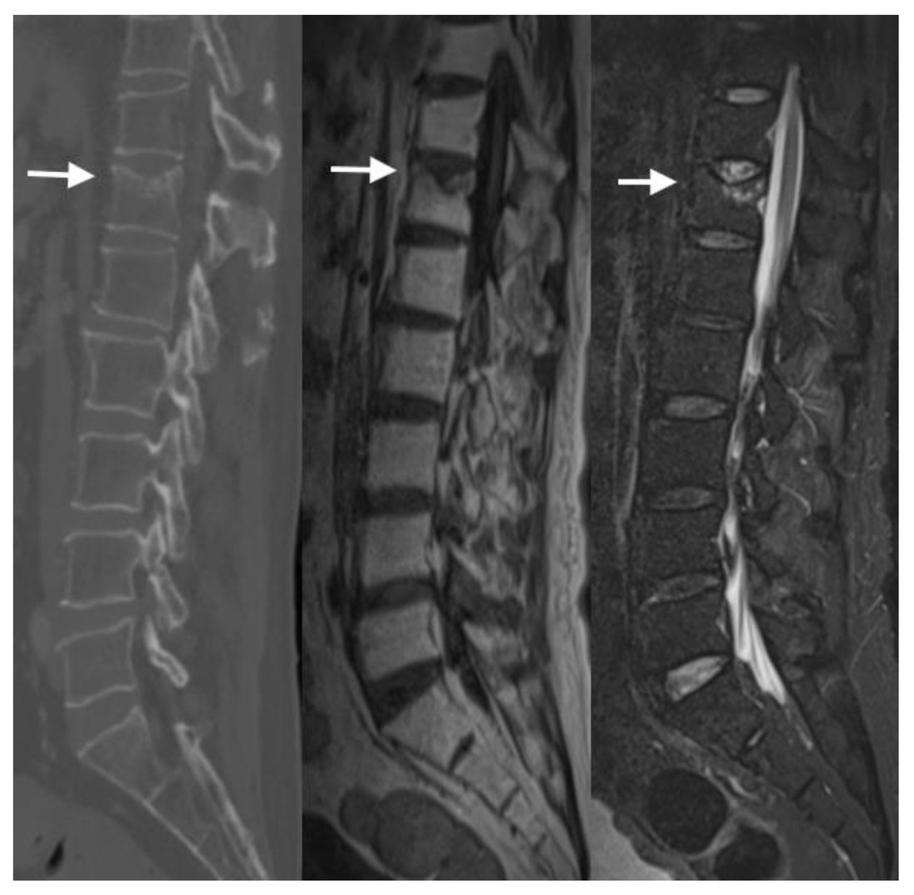
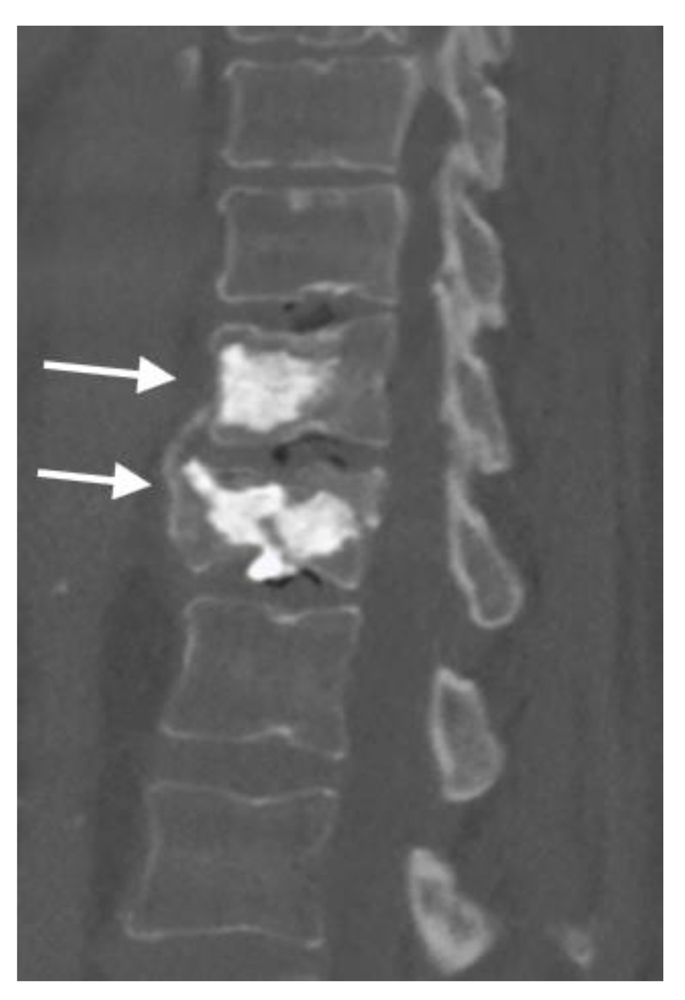
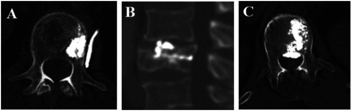

3017 — Gãy nén đốt sống do loãng xương: cấp – mạn – bệnh lý trên MRI/STIR, chỉ định bơm xi măng, rò cement
Tags: pattern:gay-nen pattern:xep-dot-song pattern:phu-tuy-xuong pattern:ro-cement vung:cot-song-nguc vung:cot-song-that-lung score:Genant protocol:MRI-STIR protocol:vertebroplasty incidentaloma:gay-dot-song
Mức chắc chắn (certainty): tổng hợp y văn (literature synthesis) — ghép tổng quan chẩn đoán hình ảnh gãy nén (PMC11508230, có ảnh), phân tích gộp 9 RCT kyphoplasty vs vertebroplasty (PMC13480986), cohort 425 ca bơm xi măng một bên (PMC13099904), cohort 153 ca so sánh VP ± dụng cụ (PMC13435515) và loạt 4 ca gãy bệnh lý bị chẩn đoán nhầm là loãng xương (PMC13288042). Nhiều nguồn, không phải một ca → không gắn nhãn ca nguyên văn.
Bài này trả lời câu hỏi thực hành hay gặp nhất ở người già đau lưng cấp: “có bơm xi măng hay không?” Câu trả lời không nằm ở mức xẹp trên X-quang, mà ở còn phù tủy xương trên STIR hay không — và ở việc đã loại trừ gãy bệnh lý/nhiễm trùng chưa. Nối 3015 – FBSS (gãy tầng kế cận sau dụng cụ) và 309 – Loét tì đè & viêm xương tủy (nhiễm trùng xương).
1. Tổng quan bệnh học – cơ chế hình ảnh
- Dịch tễ: loãng xương ảnh hưởng ~21,7% người cao tuổi trên toàn cầu (PMC13435515); gãy nén đốt sống (osteoporotic vertebral compression fracture, OVCF) là loại gãy xương do loãng xương hay gặp nhất và là biến cố mở đầu “thác đổ gãy xương” (fracture cascade) — mỗi gãy làm tăng nguy cơ gãy tiếp.
- Cơ chế: mất khối lượng xương trabecular + mỏng vỏ xương → thân đốt sống chịu lực nén kém, trong khi cột trước chịu tải nhiều hơn cột sau → gãy hình nêm (wedge) mặt trước là kiểu phổ biến nhất; lực đủ mạnh hơn → biconcave (lõm hai mặt khớp) hoặc crush (xẹp toàn bộ); vỡ cả thành sau → burst.
- TẠI SAO MRI/STIR là trọng tài “cấp hay mạn”: gãy cấp gây phù tủy xương (bone marrow edema) = tăng nước tự do + tăng tưới máu/viêm → T1 giảm tín hiệu (nước kéo dài T1) và STIR tăng tín hiệu rất mạnh (chuỗi nhạy nước + xóa tín hiệu mỡ tủy nên chỉ còn nước là sáng). Gãy mạn: tủy xơ hóa/xẹp + thay mỡ → STIR không còn sáng (xơ: tối; mỡ: bị xóa tín hiệu).
- TẠI SAO “còn sáng STIR” chưa chắc là “gãy mới trong 2 tuần”: phù tủy giảm dần trong nhiều tuần đến nhiều tháng; trong ca minh họa của PMC11508230, đốt sống gãy vẫn còn phù nhẹ trên STIR sau nhiều tháng, chỉ là giảm rõ so với phim trước. Vì vậy phải hỏi thời điểm khởi phát đau và so phim cũ, không chỉ nhìn STIR.
- TẠI SAO gãy lành tính vẫn ngấm thuốc: phản ứng viêm/sửa chữa làm tăng tưới máu trong thân đốt → ngấm thuốc không đều, “loang lổ” sau tiêm. Đây là phản ứng bình thường, không đồng nghĩa gãy ác tính nếu không có dấu hiệu khác (PMC11508230, Fig. 8).
- TẠI SAO Kümmell khác gãy thường: thiếu máu vùng thân đốt → hoại tử vô khuẩn, không liền xương → tạo khe khí trong đốt sống (intravertebral vacuum): trên CT là khí −1000 đến −400 HU (đen tuyệt đối), trên MRI là khe dịch T2 sáng. Đây là gãy không liền, đau dai dẳng, xẹp tiến triển — chỉ định can thiệp khác gãy cấp thường.
- TẠI SAO bơm xi măng giảm đau: PMMA ổn định vi cấu trúc đốt sống bị nứt (giảm vi chuyển động của mảnh gãy) + nhiệt/độc tính hóa học lên đầu mút thần kinh trong xương; giảm đau thường trong 24–72 giờ, và so với điều trị nội khoa, cải thiện đau – chức năng – chất lượng sống rõ trong 3 tháng đầu (PMC11508230).
- Số liệu định lượng phải nhớ:
- Phân độ Genant (mức mất chiều cao): độ 1 < 25%**, **độ 2 = 25–40%**, **độ 3 > 40%; độ 0 = bình thường.
- Phân tích gộp 9 RCT (1.116 bệnh nhân, tuổi trung bình 71,6; PMC13480986): VAS và ODI tương đương giữa kyphoplasty (KP) và vertebroplasty (VP); rò cement thấp hơn có ý nghĩa ở KP; thời gian mổ 48 phút (KP) vs 37 phút (VP); biến chứng nặng không khác biệt, thuyên tắc phổi 1 ca mỗi nhóm ở nghiên cứu Dohm.
- Cohort 425 ca VP một bên (PMC13099904): VAS 7,63 ± 0,84 → 3,31 ± 1,06, mức giảm trung bình 4,32 ± 1,38; biến chứng 45,4% (chủ yếu rò cement, không có di chứng thần kinh vĩnh viễn).
- Vị trí cement quyết định giảm đau (cùng cohort): vùng 4 (bờ bên đối diện) giảm VAS 5,48 ± 1,00, vùng 1 (bờ bên cùng phía chọc) chỉ 2,41 ± 0,73 → cần lan qua đường giữa, không chỉ bơm một chỗ.
- VP + dụng cụ (153 ca, PMC13435515): VP + vít xi măng giảm xẹp cột trước ở 6 tháng, OR hiệu chỉnh 0,147 (95% CI 0,043–0,502; P = 0,0022); lỏng vít 6/75 ca, không phải mổ lại.
- Gãy bệnh lý bị chẩn đoán nhầm (4 ca, PMC13288042): 1 nhiễm khuẩn sinh mủ, 1 lao cột sống, 1 brucella, 1 đa u tủy; DWI phân biệt ác tính vs loãng xương: độ nhạy 86%, độ đặc hiệu 91%.
2. Mẫu hình + chẩn đoán phân biệt theo vị trí (gamut)
Mẫu hình cốt lõi: người > 60 tuổi, đau lưng cấp, tăng khi đứng/ngồi, giảm khi nằm, không sốt, không dấu thần kinh, X-quang/CT có xẹp hình nêm; MRI STIR sáng ở đúng mức xẹp.
Gamut theo hình thái (giúp đoán cơ chế):
- Wedge (nêm trước): loãng xương điển hình, cột trước chịu nén.
- Biconcave (lõm hai mặt khớp): loãng xương, đĩa đệm đẩy vào thân đốt.
- Crush (xẹp toàn bộ): loãng xương nặng hoặc bệnh lý; phải loại trừ ác tính.
- Burst (vỡ thành sau): chấn thương năng lượng cao; nguy cơ chèn ép tủy — khác hoàn toàn OVCF đơn thuần.

*Trái: T8 xẹp hình nêm mức trung bình. Phải: L1 gãy vỡ (burst) bờ trên, mất chiều cao ~40%. Xương giảm mật độ lan tỏa — nền loãng xương rõ. Nguồn: J Imaging 2024;10:244 (PMC11508230), Fig. 2, CC BY 4.0.*
Gamut theo tín hiệu STIR (quyết định can thiệp):
- STIR sáng mạnh, T1 tối: OVCF cấp/bán cấp; gãy bệnh lý do ung thư; viêm đĩa–đốt sống; Kümmell đang hoạt động.
- STIR không sáng (hoặc sáng rất nhẹ), T1 tối + xơ: OVCF mạn/đã liền; di căn xơ hóa (ít gặp).
- STIR sáng + T1 sáng: thay mỡ (gãy cũ đã lành) hoặc hemangioma — không phải gãy cấp.
Gamut “gãy bệnh lý giả loãng xương” — 4 nhóm phải loại trừ trước khi bơm cement: đa u tủy/di căn, lao cột sống, brucella, nhiễm khuẩn sinh mủ. Dấu hiệu gợi ý: tổn thương cuống sống (pedicle sign), bờ sau thân đốt lồi ra (posterior convex), khối mô mềm cạnh sống, lan ngoài màng cứng, nhiều tầng, phá vỏ xương, bất thường dịch tễ/sốt, ESR/CRP tăng, A/G giảm.
3. Bảng so sánh phân biệt (ma trận đối chiếu)
| Thực thể (entity) | Hình ảnh điển hình | Chốt vào (rule-in) | Chốt loại (rule-out) | Gợi ý xác nhận |
|---|---|---|---|---|
| OVCF cấp/bán cấp | Xẹp nêm/biconcave, STIR sáng mạnh, T1 tối; không phá cuống, không khối mô mềm | STIR sáng đúng mức xẹp + đau cấp + không cờ đỏ | Phá cuống/bờ sau lồi/khối cạnh sống → không phải OVCF đơn thuần | MRI T1 + STIR; DXA; theo dõi 4–6 tuần |
| OVCF mạn/đã liền | Xẹp giữ nguyên, xơ hóa, STIR không sáng, T1 tối | STIR âm + phim cũ không đổi + đau cơ học mạn | STIR sáng mạnh → còn hoạt động | So phim cũ; không bơm cement |
| Kümmell (hoại tử vô khuẩn) | Khe khí (−1000 đến −400 HU) hoặc khe dịch T2 sáng trong thân đốt; xẹp tiến triển | Khe khí/khe dịch trong đốt + xẹp tăng dần | Khe khí + phá hủy cuống/mô mềm + ESR cao → nghĩ nhiễm trùng (ca brucella) | CT (khí) + MRI (dịch); cân nhắc sinh thiết |
| Gãy do ung thư (di căn/đa u tủy) | Phá cuống (pedicle sign), bờ sau lồi, khối mô mềm, nhiều tầng; T1 thay tủy lan rộng; DWI hạn chế | Phá cuống/bờ sau lồi/khối cạnh sống + DWI hạn chế (Se 86%, Sp 91%) | Khe khí + không phá cuống + STIR đúng mức xẹp → ít nghĩ ác tính | MRI + DWI/ADC; điện di miễn dịch, sinh thiết khi bơm cement |
| Viêm đĩa–đốt sống (sinh mủ) | Hẹp đĩa + phù hai đốt kề + phá mặt khớp + mô mềm cạnh sống; sốt, ESR/CRP cao | Phù/hủy hai bờ đốt kề đĩa + sốt + CRP > 10 mg/L | Chỉ một đốt, đĩa bình thường → OVCF | MRI + cấy máu/sinh thiết; không bơm cement trước khi loại trừ |
| Lao cột sống | Xẹp một hoặc nhiều đốt, áp-xe cạnh sống, phá hủy mặt khớp, đĩa có thể còn | Áp-xe cạnh sống + phá hủy + T-SPOT dương + ESR cao | Không áp-xe, không phá hủy → OVCF | MRI + T-SPOT, sinh thiết (Langhans, AFB) |
| Brucella cột sống | Xẹp + khe giống Kümmell, bào mòn bờ đốt, đau tăng dần | Dịch tễ (chăn nuôi/sữa tươi) + huyết thanh brucella dương + ESR 50 | Huyết thanh âm + không bào mòn → ít nghĩ brucella | Rose Bengal/huyết thanh, MRI |
| Burst do chấn thương | Vỡ thành sau, mảnh xương vào ống sống, hẹp ống sống | Mảnh thành sau + hẹp ống sống + cơ chế chấn thương | Thành sau nguyên vẹn → OVCF | CT dựng hình + MRI (đánh giá tủy) |

Trái: gãy CẤP — T1 tối, STIR sáng mạnh trong thân đốt L1, kèm hình ảnh cắt ngang cho thấy mảnh thành sau đẩy vào ống sống 0,6 cm. Phải: gãy MẠN — CT xương cứng/xơ, T1 tối do xơ, STIR chỉ còn phù nhẹ (đã giảm rõ so với phim trước). Nguồn: J Imaging 2024;10:244 (PMC11508230), CC BY 4.0; ảnh nguyên bản, ghép letterbox.4. Protocol chụp + hệ phân độ/điểm chuẩn hóa
- Trình tự chẩn đoán:
- X-quang cột sống (thẳng + nghiêng): phát hiện xẹp, đo chiều cao, so phim cũ.
- CT cột sống: đánh giá vỏ xương, cuống sống, thành sau, khe khí; cần khi nghi bệnh lý hoặc trước can thiệp.
- MRI toàn cột sống T1 + STIR (bắt buộc trước khi quyết định bơm cement): xác định còn phù tủy hay không, tìm tổn thương thứ hai, chèn ép tủy, áp-xe/mô mềm.
- MRI có tương phản: chỉ khi nghi nhiễm trùng/ác tính — nhớ gãy lành tính vẫn ngấm thuốc, nên không dùng ngấm thuốc đơn thuần để chẩn đoán ác tính.
- DXA + FRAX: xác định loãng xương, quyết định điều trị nền (không bỏ qua — bơm cement không điều trị loãng xương).
- Phân độ Genant (mất chiều cao thân đốt so với đốt kề): độ 1 < 25%**, **độ 2 25–40%**, **độ 3 > 40%; ghi kèm kiểu (nêm/biconcave/crush) và mức.
- Chỉ định bơm xi măng (vertebroplasty/kyphoplasty):
- OVCF cấp/bán cấp có phù tủy trên STIR, đau trung bình–nặng, thất bại điều trị nội khoa 3–6 tuần (giảm đau, dụng cụ chỉnh hình, tập).
- Kümmell/không liền xương có khe khí/dịch, xẹp tiến triển, đau dai dẳng.
- Không có dấu thần kinh khu trú, không nhiễm trùng, không rối loạn đông máu.
- Chống chỉ định / chuyển mổ hở:
- Nhiễm trùng tại chỗ hoặc toàn thân, sốt chưa rõ nguyên nhân.
- Burst có mảnh thành sau chèn ép tủy, hẹp ống sống, thiếu hụt thần kinh → giải ép ± cố định, không bơm đơn thuần.
- Gãy bệnh lý chưa có chẩn đoán mô học — nếu vẫn can thiệp, làm sinh thiết tủy xương trong lúc bơm (khuyến cáo của PMC13288042).
- Rối loạn đông máu nặng, dị ứng thuốc cản quang/cement.
- Kỹ thuật & chất lượng:
- Một bên (unipedicular) là chuẩn; kiểm tra lan qua đường giữa trên AP.
- Vị trí cement quan trọng hơn thể tích: vùng 4 (bờ bên đối diện) giảm đau tốt nhất (5,48 điểm VAS), vùng 1 (cùng phía chọc) kém nhất (2,41).
- KP vs VP: hiệu quả đau – chức năng tương đương, KP ít rò cement hơn, mổ lâu hơn ~11 phút (48 vs 37).
- Xẹp cột trước tiến triển sau VP: cân nhắc VP + vít xi măng (OR 0,147 cho xẹp cột trước ở 6 tháng) ở ca mất vững.
- Sơ đồ quyết định:
flowchart TD
A[Người già đau lưng cấp<br/>X-quang/CT có xẹp đốt sống] --> B[MRI T1 + STIR toàn cột sống]
B --> C{Có cờ đỏ?<br/>sốt, ESR/CRP cao,<br/>phá cuống, khối mô mềm,<br/>DWI hạn chế}
C -->|Có| D[Sinh thiết / cấy trước<br/>điều trị theo nguyên nhân]
C -->|Không| E{STIR còn sáng?}
E -->|Không| F[Gãy mạn - điều trị nội khoa<br/>+ điều trị loãng xương]
E -->|Có| G{Thất bại nội khoa<br/>3-6 tuần + đau nhiều?}
G -->|Không| H[Tiếp tục nội khoa - theo dõi]
G -->|Có| I{Có chèn ép tủy<br/>hoặc thiếu hụt thần kinh?}
I -->|Có| J[Giải ép ± cố định]
I -->|Không| K[Bơm cement một bên<br/>lan qua đường giữa]
K --> L[Kiểm tra CT: vị trí cement<br/>và rò cement]
L --> M[Điều trị loãng xương nền<br/>+ theo dõi tầng kế cận]
5. Biến thể bình thường và cạm bẫy
- Ngấm thuốc không phải là ác tính. Gãy lành tính ngấm thuốc loang lổ do tăng tưới máu; dùng ngấm thuốc đơn thuần để chẩn đoán ung thư là dương tính giả (PMC11508230, Fig. 8).
- STIR sáng không đồng nghĩa “mới trong 2 tuần”. Phù tủy tồn tại nhiều tuần đến nhiều tháng; ca gãy mạn vẫn còn phù nhẹ trên STIR. Hỏi ngày khởi phát đau + so phim cũ trước khi kết luận cấp.
- Khe khí trong đốt sống không chỉ là Kümmell. Ca brucella (74 tuổi, ESR 50 mm/h) bị chẩn đoán nhầm Kümmell vì có khe giống dịch trong đốt + bào mòn bờ đốt. Khe khí + bào mòn/phá hủy + ESR cao → nghĩ nhiễm trùng, không bơm cement đơn thuần.
- Bốn ca gãy bệnh lý bị bơm cement như gãy loãng xương (nhiễm khuẩn sinh mủ, lao, brucella, đa u tủy): điểm chung là không sốt, không phá hủy rõ, không khối mô mềm → “quá sạch” cũng là cạm bẫy. Cờ đỏ theo PMC13288042: ESR > 30 mm/h, CRP > 10 mg/L, A/G < 1,5, phá vỏ/cuống/mô mềm cạnh sống, không khớp giữa lâm sàng – xét nghiệm – hình ảnh → sinh thiết tủy xương khi bơm cement.
- Rò cement — 45,4% trên hình ảnh nhưng phần lớn im lặng: phân biệt rò tĩnh mạch (nguy cơ thuyên tắc phổi, có thể xuất hiện muộn 2 năm), rò vào đĩa đệm (nguy cơ gãy tầng kế cận), rò ngoài màng cứng (nguy cơ chèn ép tủy), rò cạnh sống. Báo cáo vị trí + hướng rò trên CT kiểm tra, không chỉ ghi “có rò”.
- Bơm nhiều cement không đồng nghĩa giảm đau nhiều: phân bố (lan qua đường giữa) quan trọng hơn thể tích; bơm thêm chỉ tăng nguy cơ rò.
- Bỏ qua điều trị loãng xương nền: bơm cement chỉ chữa một đốt đang đau; không dùng bisphosphonate/denosumab + canxi/vitamin D + tập tải trọng thì gãy tầng kế cận là hệ quả tất yếu (xem 3015).
- Không bơm cement cho gãy burst có mảnh thành sau — nguy cơ đẩy mảnh vào ống sống; ca có retropulsion 0,6 cm trong bài là ví dụ phải đánh giá thần kinh trước.
6. Tự lượng giá — Blind Quiz
Ca 1 — Nữ 72 tuổi, đau lưng cấp 3 tuần sau bê vật nặng, không sốt, không yếu chân. X-quang thấy L1 xẹp.

- Gợi ý: mất chiều cao khoảng 25–40%; đau tăng khi đứng, giảm khi nằm; chưa dùng giảm đau đều.
- Câu hỏi: Mô tả tín hiệu trên T1 và STIR? Có gì ở lát cắt ngang? Có chỉ định bơm cement ngay không?
Bấm để hiện đáp án (findings + chẩn đoán)
- Dấu hiệu: (trên trái) T1 giảm tín hiệu trong thân L1; (trên phải) STIR tăng tín hiệu mạnh → phù tủy xương = gãy cấp/bán cấp; (dưới trái) lát T2 ngang: mảnh thành sau đẩy vào ống sống 0,6 cm, hẹp ống sống mức trung bình, chen chật rễ đuôi ngựa; (dưới phải) T1 sau tiêm: ngấm thuốc không đều — phản ứng, bình thường.
- Chẩn đoán: OVCF cấp L1, Genant độ 2, có retropulsion 0,6 cm nhưng chưa có thiếu hụt thần kinh.
- Xử trí: chưa bơm cement ngay — cần (1) khám thần kinh kỹ, (2) thử nội khoa 3–6 tuần nếu đau kiểm soát được; nếu đau không kiểm soát và không có chèn ép tủy → vertebroplasty/kyphoplasty; nếu yếu chân/bí tiểu → giải ép.
- Nguồn ảnh: J Imaging 2024;10:244 (PMC11508230), Fig. 7, CC BY 4.0.
Ca 2 — Nam 78 tuổi, đau lưng âm ỉ 1 năm, không đợt cấp. X-quang T12 xẹp nhẹ, không thay đổi so với 2 năm trước.

- Gợi ý: đau kiểu cơ học, không đau về đêm, không sụt cân; đã vật lý trị liệu nhiều đợt.
- Câu hỏi: Tín hiệu STIR nói gì? Có chỉ định bơm xi măng không? Vì sao?
Bấm để hiện đáp án (findings + chẩn đoán)
- Dấu hiệu: (trái) CT: xẹp nhẹ bờ trên T12, bờ xương cứng/xơ; (giữa) T1: giảm tín hiệu do xơ; (phải) STIR: chỉ còn phù nhẹ, giảm rõ so với phim trước.
- Chẩn đoán: OVCF mạn/đang lành, không còn hoạt động mạnh.
- Xử trí: không bơm xi măng — không còn phù tủy đáng kể, đau mạn không do vi chuyển động của ổ gãy mới; điều trị loãng xương nền + tập + giảm đau, tìm nguyên nhân đau khác (hẹp ống sống, đau cơ, gãy tầng khác).
- Bài học: STIR là trọng tài, không phải mức xẹp trên X-quang.
- Nguồn ảnh: J Imaging 2024;10:244 (PMC11508230), Fig. 9, CC BY 4.0.
Ca 3 — Nữ 80 tuổi, sau bơm xi măng T11–T12 vì gãy nén. CT kiểm tra 1 ngày sau.

- Gợi ý: hết đau nhiều sau 24 giờ; không khó thở, không yếu chân; kiểm tra vị trí cement theo quy trình.
- Câu hỏi: Cement đã lấp đúng chưa? Cần tìm gì trên CT kiểm tra?
Bấm để hiện đáp án (findings + chẩn đoán)
- Dấu hiệu: cement lấp thân T11 (gãy nén) và T12 (gãy vỡ nhiều mảnh, mất chiều cao nhẹ); không thấy cement vượt thành sau vào ống sống, không tràn vào đĩa trên lát cạnh dọc này.
- Cần tìm trên CT kiểm tra (4 hướng rò): tĩnh mạch cạnh sống (nguy cơ thuyên tắc phổi, có thể xuất hiện muộn), đĩa đệm (nguy cơ gãy tầng kế cận), ngoài màng cứng (chèn ép tủy), mô mềm cạnh sống.
- Đối chiếu 3 kiểu rò điển hình:

- (A) rò tĩnh mạch — im lặng nhưng nguy cơ thuyên tắc phổi; (B) rò vào đĩa đệm — nguy cơ gãy tầng kế cận; (C) rò ngoài màng cứng — nguy cơ chèn ép tủy, cần theo dõi thần kinh sát.
- Nguồn ảnh: J Imaging 2024;10:244 (PMC11508230), Fig. 16, CC BY 4.0; Front Surg 2026;13:1806822 (PMC13099904), Fig. 3, CC BY 4.0.
Bài liên quan chéo
- 3015 – Hội chứng đau sau mổ cột sống (FBSS) — gãy tầng kế cận, gãy quanh dụng cụ
- 306 – Theo dõi sau SBRT di căn xương trong RCC — gãy bệnh lý do ung thư
- 309 – Loét tì đè & viêm xương tủy ở người lớn spina bifida — nhiễm trùng xương
- 302 – Nang sán xương cột sống ở trẻ — tổn thương đốt sống khác loãng xương
- 300 – Tổng quan hệ Cơ – Xương – Khớp
Ảnh
- Tên file:
3017_*.jpg; composite:images/composite_gay-cap-vs-man-tinh.jpg(tạo bằngtools/make_composite.py, letterbox, không crop/kéo giãn). - Nguồn + giấy phép từng ảnh:
images/CREDITS.md; link gốc trongsources.md. - Cả 3 nguồn ảnh (PMC11508230, PMC13099904) đều CC BY 4.0 — dùng và ghép được khi ghi nguồn.
Không dùng để chẩn đoán độc lập khi chưa có người hướng dẫn.